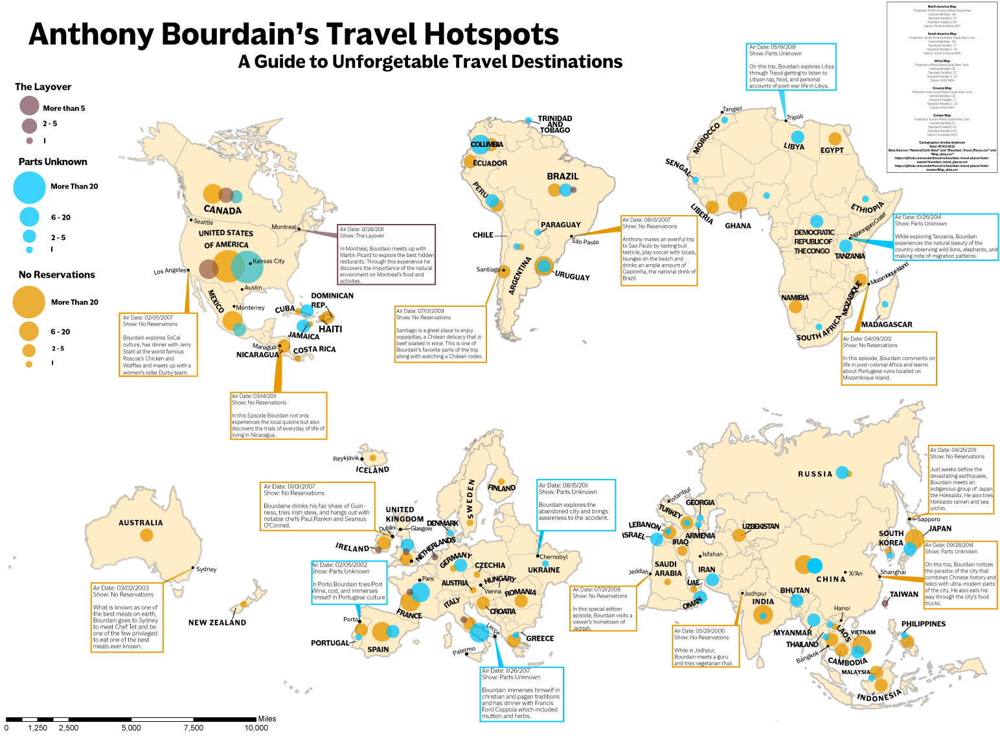

This is a map I created as a final project in my first cartography class. It is a proportional symbol map of all the places Anthony Bourdain, a travel documentarian and chef went to across his three different shows, No Reservations, The Layover, and Parts Unknown. Because Bourdain was a world-renowned chef, I wanted the map to give an overall feel of a menu with each continent as a menu item, and each place that has a description is a different ingredient or element of the dish. I picked places to highlight from the different shows based on how interesting the episode descriptions seemed and tried to be consistent with the number of episodes I was highlighting across continents. Furthermore, throughout the making of the map I made some important design choices, one of which includes the halo surrounding each continent. Without the beige halo, the continents fade into the background and do not bring the correct amount of emphasis to the map as a whole. The transparency and colors of the proportional symbols were also important to my design. I needed the symbols to be transparents the size contrast between each different type of symbol was readily noticeable and the stark contrast between colors were also very intentional because each show was very different from each other and I wanted that to be reflected by varying hue and not value. Overall, I am happy with the way the map turned out as this was my first big assignment when I was just entering the world of cartography.
